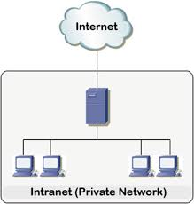

An intranet is a private network used within an organization to share information securely among employees.
It uses Internet technologies such as HTTP and TCP/IP but restricts access to authorized users within the organization.
A company portal where employees access internal documents, HR systems, or announcements.
Improves communication, collaboration, and data security within organizations.